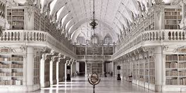

 Государственная публичная и межвузовская библиотека св. Женевьевы (La bibliothèque Sainte-Geneviève) расположена рядом с Лицеем Генриха IV на площади Пантеон в V округе Парижа. Её книжное собрание, насчитывающее более 2 млн. томов и электронных изданий по всем отраслям знания, разделено на три основные раздела. В самом обширном Общем фонде представлены издания, вышедшие из печати с 1811 года по настоящее время. В Резервном фонде (La Réserve) хранится около 4 тыс. рукописных хроник, 150 тыс. первопечатных изданий, а также 50 тыс. фотографий и произведений изобразительного искусства (эстампов и гравюр). Скандинавская библиотека (La Bibliothèque nordique) насчитывает 163,4 тыс. единиц хранения, включая нотные партитуры и оптические диски. Столетия истории Начало комплектования книжного собрания библиотеки св. Женевьевы было положено ещё VI в. В те годы хранителями, переводчиками и переписчиками книг были монахи аббатства св. Женевьевы, основанного по указанию короля Хлодвига. Первые документально подтверждённые данные о существовании библиотеки в аббатстве относятся к 831 году и касаются, в частности, книг настоятеля Фонтенелля. В IX-XI вв. развитие библиотеки сдерживалось постоянными вторжениями норманнов, грабивших христианские монастыри. В начале XII в. по приглашению Этьена де Гарланда в библиотеке аббатства работал Абеляр. К XIII столетию в каталоге библиотеки без учёта литургических текстов числилось уже 226 томов. После того, как в 1619 году настоятелем аббатства стал епископ Сенли кардинал де Ларошфуко размеры библиотеки стали быстро увеличиваться за счёт завещаний и даров. К 1624 году в ней хранилось 600 книг, в 1687 году 20 тыс. изданий и 400 рукописей, а в 1710 году по завещанию архиепископа Реймса Ш. М. Телье фонды библиотеки пополнились ещё 16 тыс. томов. В XVIII в. она стала одной из первых парижских библиотек, открытой для всех горожан. В начале революционных событий в 1790 году библиотека св. Женевьевы была объявлена достоянием государства, что помогло ей избежать гибели после упразднения аббатства. В послереволюционные годы фонды библиотеки стремительно пополнялись за счет поступления личных библиотек репрессированных сторонником монархии Бурбонов. К середине XIX в. недостаток места для книг стал главной проблемой библиотеки св. Женевьевы. В 1841 году она занимала здание колледжа Монтегю, снесённого при реконструкции площади Пантеон. Архитектура экстерьера нового здания Современное здание библиотеки построено в 1844-1851 годах по проекту А. Лабруста. При его разработке автор придерживался неоклассического стиля в архитектуре, но обогатил его использованием новых строительных материалов. Академически строгий фасад здания почти лишен декоративных украшений за исключением ряда растительных гирлянд, рельефа фриза, полуколонн и арочной формы окон. Под окнами читального зала на стене библиотеки в хронологическом порядке выгравированы имена 810 авторов книг от пророка Моисея до химика Й. Я. Берцелиуса. Это одно из первых зданий Парижа при возведении которого применялись конструкции из металла в виде разгрузочных арок и чугунных колонн. Прежде они использовались только при строительстве цехов предприятий и вокзалов. Интерьер и планировка библиотеки Просторный квадратный вестибюль украшают массивные колонны и мраморный пол с геометрическим узором. Напротив входа библиотеки находится центральная лестница, ведущая в читальный зал. Справа и слева от вестибюля расположены хранилища редких и ценных книг. В большом читальном зале, напоминающем неф готического собора, и в других помещениях библиотеки до сих пор используется спроектированная архитектором мебель с резными украшениями XIX в. Он разделен на две равные части внутренней колоннадой из 18 колонн установленных на двух метровых каменных базах. Двойной свод потолка поддерживаются разгрузочными арками, опирающимися на каменные колонны у стен.